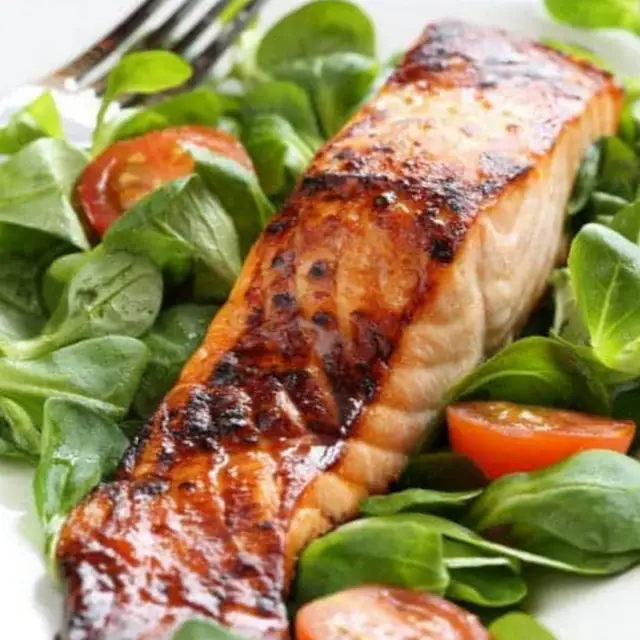

Grilled Salmon

Learn the best way to cook salmon on the grill and it will quickly
become a favorite meal at your house.
Ingredients
- 1 ½ pounds salmon fillets
- ¼ cup soy sauce
- ¼ cup brown sugar
- ¼ cup lemon juice
- ¼ cup oil
- 3 garlic cloves (crushed)
- 1 teaspoon black pepper
Steps
- Combine all ingredients except for the salmon itself in a gallon
zipper bag.
- Add the salmon filet and turn to coat.
- Marinate in the refrigerator for at least 2 hours.
- Heat your gas grill to medium heat and spray the grate
with cooking spray.
- Grill salmon flesh side down first for about 6 minutes.
- Flip and grill the salmon another 6 minutes or until the fish
flakes easily with a fork.